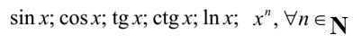
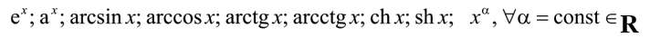
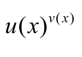
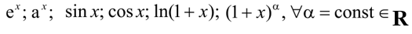

The first order derivative, the differentiated function: introduction
and their equivalence (with proof and complete explanation).
The rules of the differentiation: linearity, product, ratio
(everything is with proof).
The tabular derivatives:
 (all functions
are with proof).
Differentiation of the superposition with an arbitrary finite number
of inner functions (without proof, but with complete explanation).
The relationship between the continuity and the differentiation (with
proof and complete explanation), the geometrical meaning.
The geometrical meaning of the first order derivative (with proof);
the geometrical meaning of the smoothness and the continuously
differentiated function.
Inverse functions: introduction. The first order derivative of the
inverse function (only the statement is required, without proof). The
tabular derivatives of the following functions:
 (everything is
with proof).
The first order derivative of
 (with proof).
Higher derivatives (with proof). The n-th order derivative of

(everything is with proof).
The l’Hospital rule (only the statement, without proof). Two
remarkable limits in terms of this theorem (both are with proof).
Series
Real-valued numerical series: introduction and main definitions.
The geometric progression and its convergence (with proof).
Necessary indication (only explanation) and comparison indication
(with proof).
The d’Alembert indication, the radical Cauchy indication, the integral
Cauchy indication (everything is without proof, but with complete
explanation).
The absolute and conditional convergence (complete explanation,
without proof). The Leibnitz theorem (with proof).